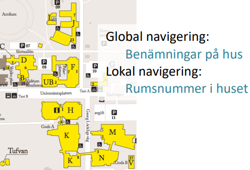
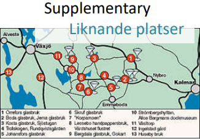
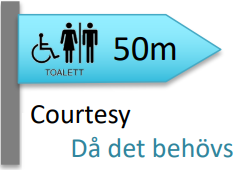
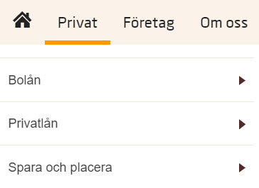
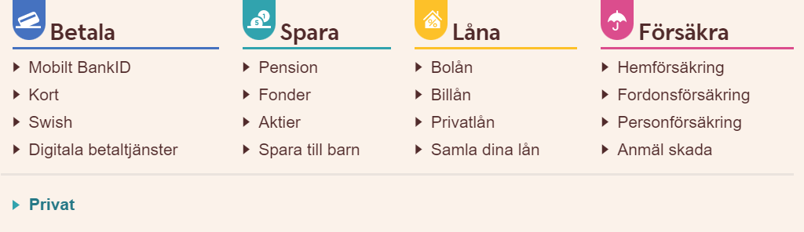

Navigerings sätt
Global respektive lokal navigering
Global navigering används för att snabbt förflyta sig runt webbplatsen oftast oavsett vart en befinner sig. Det är dock bara ett sätt att flytta sig till rätt del på webbplatsen, inte ett sätt att hitta en specifik sida. För att sedan navigera sig till exakt den sidan en vill komma åt används lokal navigering. Det används för mer precis navigering men är ofta bara tillgänglig när en är på rätt del av webbplatsen för den navigationen och länkarna går bara till ”närliggande” sidor. Båda dessa navigeringssätt används ofta i kombination som det primära sättet att navigera sig runt en webbplats.
supplementary respektive courtesy navigering
Supplementary navigering är länkar som snabbt tar en till relaterade sidor på en webbplats. Det kan länka till tex relaterade sidor till sidan en är på men som inte kan nås av den lokala navigeringen eller populära sidor från startsidan så en snabbt kan komma i gång. Dessa länkar är oftast bara tillgängliga på specifika sidor och syns inte på hela webbsidan.
Courtesy navigering är länkar som går till ofta viktig information som inte används speciellt ofta. Länkarna går ofta till sidor som handlar om sidan och företaget eller personerna bakom sidan som tex kontaktinformation, vanliga frågor eller information om sidans eller företagets syfte. Den här typen av navigering finns ofta tillgänglig på alla sidor på webbplatsen. Båda dessa typer av navigering är till för att en lätt ska kunna hitta relevant information till sidan oberoende av webbplatsens normala struktur.
Exempel
Global navigering hittas högst upp på sidan i en avlång ruta.
Lokal navigering dyker upp under den globala navigeringen när en sektion har valts i den globala menyn som har flera delar.

Courtesy navigering är längst ned på sidan i ett större avgränsat område.
Supplementary navigering finns mitt på sidan och exemplet bilden visar har länkar till olika delar av webbplatsen som en även kan hitta ned global och lokal navigering.